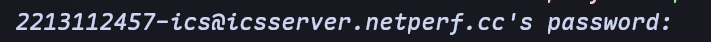
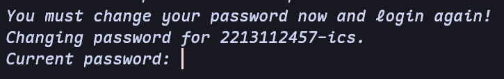
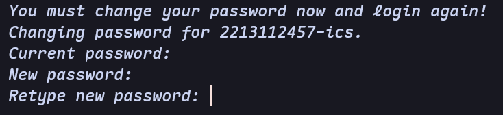
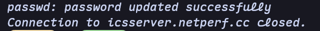

ICS-Server¶
服务器配置¶
ICS课程团队准备了两台服务器，配置如下：
-
icsserver（main）：位于兴庆，域名icsserver.netperf.cc，端口2220 -
vm-ics（backup）：位于创新港，域名igw.netperf.cc，端口2292
Note
位于创新港的服务器原则上作为备份和紧急情况使用，助教团队分发实验时也不会往第二台服务器分发。因此，建议同学们非必要不要选择第二台服务器作为主力开发环境。
Danger
严禁使用服务器进行挖矿或其他恶意占用服务器资源的行为，一经发现将进行封号并严厉处罚。
用户名和初始密码¶
用户名：你的学号加-ics
初始密码：你的学号
例如：你的学号是2213112457，那么你的服务器用户名就是：2213112457-ics，初始密码为：2213112457。
Danger
为了防止信息泄露，首次登录输入初始密码后，服务器会强制登录用户修改密码。请同学们保管好自己修改后的密码，或者可自行尝试ssh密钥登录。
Note
如果你发现你的账号不存在，忘记密码，或者无法正常登录等情况（比如密码被同学篡改或者在第一周开课之后才选上课），请立刻联系助教进行处理
首次登录¶
首次登录时，系统会强制要求改密码，必须使用系统终端进行第一次登录，直接使用VSCode等会报错找不到tty
常见系统的登录命令如下（注意将username，host，port`改成自己的用户名和目标服务器的真实域名和端口）：
建议使用Windows自带的Powershell，使用如下命令登录：
例如用户名是2213112457-ics，选择第一台服务器，则实际命令为：
打开系统自带的 Terminal ，使用如下命令登录
例如用户名是2213112457-ics，选择第一台服务器，则实际命令为：
命令执行之后，系统会提示输入密码，此时输入你的初始密码即可。

Note
输入密码的时候不会有回显，这是正常情况
成功登陆以后，系统会提示你需要立刻修改密码，否则登录是失败的：

这个时候需要首先输入当前的密码，也就是你自己的初始密码，输入成功之后，系统会提示修改密码：

此时才需要输入自己想设置的新密码，注意密码需要满足系统的要求（比如不能太短等）。
输入新密码之后，根据系统提示再重新输入一遍自己设置的新密码，匹配成功之后，会出现如下界面，说明登录成功。

后续再次登录时，输入自己设置的新密码即可登录成功。
登录成功检查¶
无论大家使用上述的什么方式尝试登录ICS-Server，在ICS-Server的终端中键入如下命令：
若显示你对应的用户名（比如2213112457-ics），则表明你登录ICS-Server成功且账号无误。
免密登录¶
SSH免密登录即使用密钥进行登录，可以免去输入密码的过程，大幅提升速度。
免密登录的过程包括生成密钥和上传公钥到服务器两个步骤。
首先打开系统终端，输入以下命令生成一对公钥和私钥：
之后一直按回车就行。
Note
ssh-keygen可以设置很多命令行参数，感兴趣的同学可以自行探索
成功生成密钥之后，你会得到两个文件，其中带有.pub后缀的是公钥（比如id_ed25519和id_ed25519.pub）
接下来，将公钥上传至服务器。
如果是 MaxOS/Linux 系统，直接使用以下命令即可：
如果是Windows系统，则需要手动将公钥内容复制到服务器的~/.ssh/authorized_keys文件中。
公钥上传成功之后，再次运行之前的登录命令，无需输入密码即可登录。
如果连登录命令都不想输入，可以将服务器的配置写入~/.ssh/config文件，以下内容作为参考：
其中，Host字段可以随意设置，比如设为ics，HostName设置成服务器的域名，User设置成自己的用户名，IdentityFile设置成你自己的私钥地址。
后续直接输入ssh ics即可成功连接。
后续操作¶
成功使用系统终端登录之后，后续就可以在服务器上开发和探索了，可以参考如下文档：
-
使用vscode进行远程开发，参考VSCode远程开发
-
Linux命令行学习与探索，参考实用工具学习
-
常用命令大全，参考Unix/Linux Command Reference